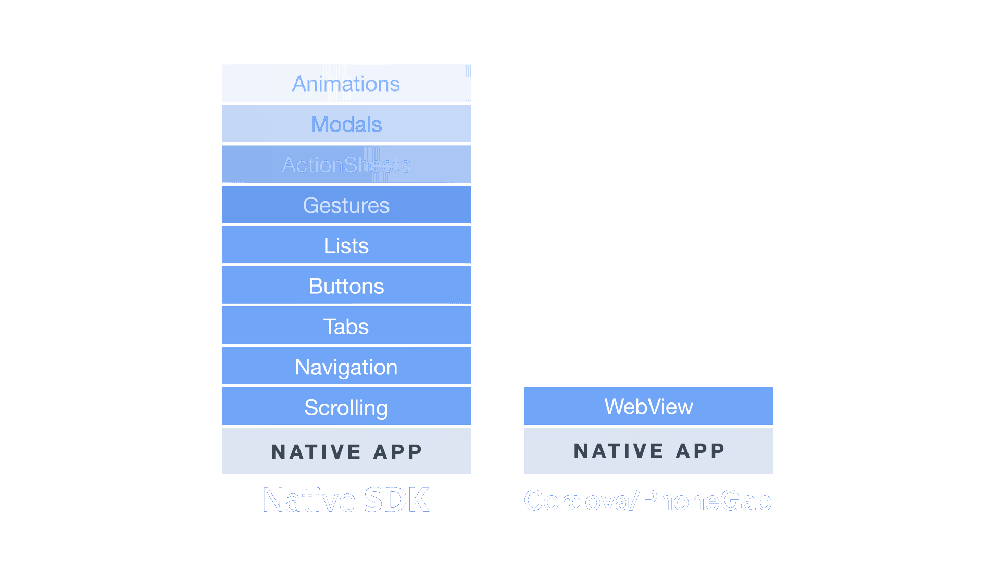

Angular Vienna
Mobile Apps
with
Ionic &
Angular
Indermohan Singh
About Me
- Indermohan Singh
- Software Developer, Greentube
- Author Ionic 2 Blueprints
- Vienna, Austria
- @imsinghk7
- github.com/imsingh
Overview
- Hybrid Apps
- Intro to Ionic
- UI Components
- Ionic Navigation
- Using Native Features
- Demos
Building apps is Hard
- Proficiency in each targeted platform
- Domain-specific language to learn
- Entirely separate code bases
- Expensive development (time and cost)
- Lack of portability with native approaches


Enter Hybrid Apps!
HTML5 with platform-specific UI
Full access to native APIs and SDKs
Familiar web development environment
Single code base across native and the web
Hybrid Development
something missing?
Here comes Ionic!

How it all comes together
- Your App
- Ionic
- Angular
- Cordova
- Native SDKs
Ionic UI Components
Lists
- Angular Directive
- Buttons exposed by swiping
- Reorder
<ion-list
reorder="true"
(ionItemReorder)="reorderItems($event)">
<button ion-item *ngFor="let item of items">
{{ item.title }}
</button>
</ion-list>
Virtual Scrolling
- Inspired by iOS’s UICollectionView
- Scroll through thousands of items
- Only renders the viewable items
- Smooth scrolling!
<ion-list [virtualScroll]="items">
<ion-item *virtualItem="let item">
{{item}}
</ion-item>
</ion-list>
Other Components
- Side Menus
- Actionsheet
- Modal
- Pull To Refresh
- Spinners
- Slidebox
- Infinite Scroll
- Swipeable List Options
- Popup
- Popover
- Loading Overlay
- Inputs
- Buttons
- etc.
Navigation
Navigation
- No Angular Router
- No Router Config
- How does navigation works then?
Ionic Page
- Angular Component
- They are application Component. a.k.a Router States
<ion-header>
<!-- Title and Navigation Controls -->
</ion-header>
<ion-content>
<!-- Main Content of Page -->
</ion-content>
<ion-footer>
<!-- Whatever you want to put -->
</ion-footer>
Ionic Router
- Stack based Navigation
- Push/Pop Page
- Last Page is shown on Screen
- Pages can be reused
- and they be used recursively
View Projection
<router-outlet></router-outlet> <!-- Angular -->
@Component(
template: `<ion-nav [root]="rootPage"></ion-nav>`
})
class MyApp {
// rootPage is the first page of the app
public rootPage: any = StartPage;
constructor(){}
}
Navigating Programmatically
import { SecondPage } from './pages/second/second';
import { NavController } from 'ionic-angular';
...
class MyApp {
...
constructor(private navCtrl: NavController) {}
openPage() {
this.navCtrl.push(SecondPage);
}
goBack() {
this.navCtrl.pop();
}
}
Navigation Parameters
Sending Page
...
params:any = { id: 10 };
openPage() {
this.navCtrl.push(SecondPage, params);
}
Receiving Page
import { NavParams } from 'ionic-angular';
...
params:any = { id: 10 };
contructor(private params:NavParams) {
let id = this.params.get('id');
}
Navigating with Directives
- navPush
- navPop
- navParams
<button ion-button [navPush]="pushPage" [navParams]="params">Go</button>
<button ion-button navPop>Go Back</button>
class MyPage {
params: Object;
pushPage: any;
constructor(){
this.pushPage = LoginPage;
this.params = { id: 42 };
}
}
LifeCycle Events
- ionViewDidLoad
- ionViewWillEnter
- ionViewDidEnter
- ionViewWillLeave
- ionViewDidLeave
- ionViewWillUnload
Guards
- ionViewCanEnter:boolean
- ionViewCanLeave:boolean
...
export class MyIonicPage {
...
ionViewCanEnter() {
if(something) {
return true;
} else {
return false;
}
}
}
Tabs
<ion-tabs>
<ion-tab [root]="firstTab"></ion-tab>
<ion-tab [root]="secondTab"></ion-tab>
<ion-tab [root]="thirdTab"></ion-tab>
</ion-tabs>
- Each Tab has Own Navigation History
- You need to Specify Root Page for Each Tab
- Think of <ion-tab> as <ion-nav>
Platform Continuity
Using Native Features
- Cordova Plugins
- JavaScript API
- Native Code
- Ionic Native: Observable/Promise Wrapper for Cordova Plugins
Installing Plugins
Find the Plugin you need at https://ionicframework.com/docs/native/
$ ionic cordova plugin add cordova-plugin-camera
$ npm install @ionic-native/camera --saveUsing Plugins
import { Camera } from '@ionic-native/camera';
@NgModule({
...
providers: [
...
Camera
]
})
...
constructor(private camera: Camera) { }
getPicture() {
this.camera.getPicture(options)
.then(imageData => {})
}
npm install -g ionic cordova
ionic start myApp
Running App using DevApp
- No Need to install Native SDKs to test app
- Install the Ionic DevApp for Android/iOS, then run
$ ionic serve -c - Then you can test your app on device right away
- Ionic DevApp Link
What's next?
Getting started guide
ionicframework.com/getting-started
Documentation
ionicframework.com/docs